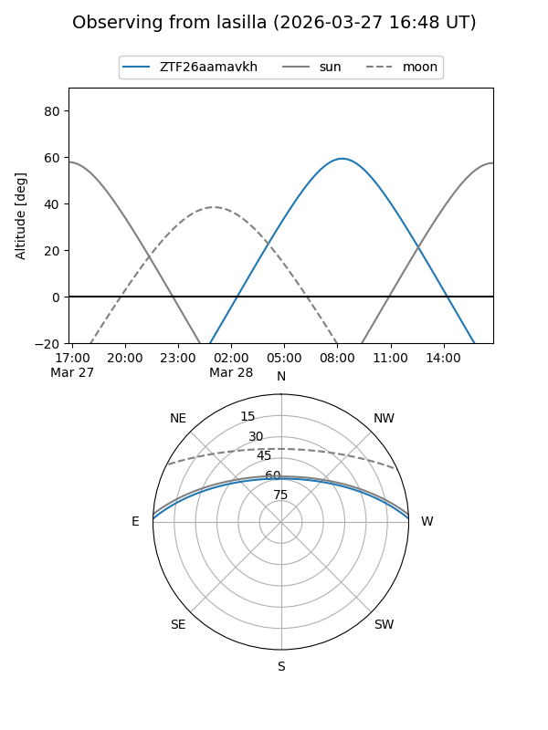
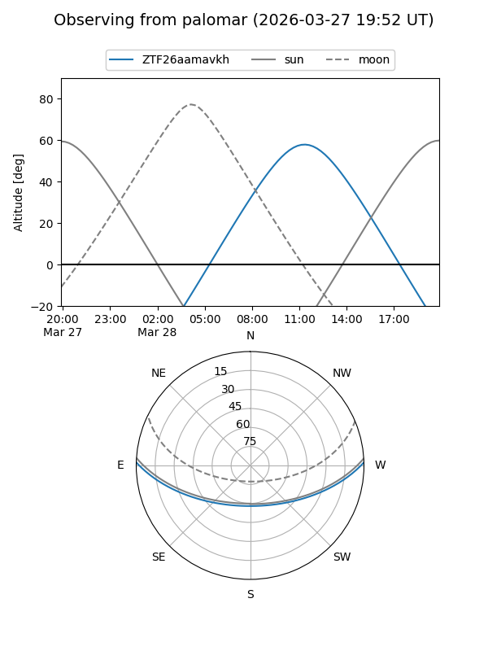

ZTF26aamavkh
Target ZTF26aamavkh at 2026-03-27 13:40
Aliases and brokers:
FINK: link
Lasair: link
ALeRCE: link
alt names
ZTF26aamavkh (ztf,fink_ztf)
Coordinates:
equatorial (ra, dec) = 238.7481,+1.37177
equatorial (HMS+DMS) = 15:54:59.54,+01:22:18.37
galactic (l, b) = (10.5221,+39.06633)
Flags:
Photometry:
last ztfg=16.80
1 ztfg detections
Lightcurve
Visibility


Additional plots